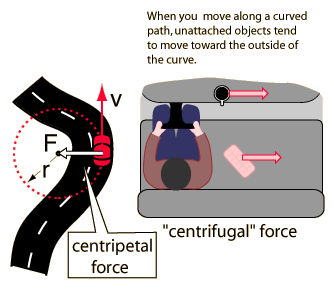
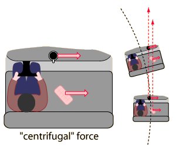

Centrifugal Force
Whereas the centripetal force is seen as a force which must be applied
by an external agent to force an object to move in a curved path, the centrifugal and coriolis forces are "effective forces" which are invoked to explain the behavior of objects from a frame of reference which is rotating.
|

 |
The driver of a car on a curve is in a rotating reference frame and he could invoke a "centrifugal" force to explain why his coffee cup and the carton of eggs he has on the seat beside him tend to slide sideways. The friction of the seat or dashboard may not be sufficient to accelerate these objects in the curved path.
A person in a hovering helicopter above the car could describe the movement of the cup and the egg carton as just going straight while the car travels in a curved path. It is similar to the "broken string" example.
|
The centrifugal force is a useful concept when the most convenient reference frame is one which is moving in a curved path, and therefore experiencing a centripetal acceleration. Since the car above will be experiencing a centripetal acceleration v2/r, then an object of mass m on the seat will require a force mv2/r toward the center of the circle to stay at the same spot on the seat. From the reference frame of a person in the car, there seems to be an outward centrifugal force mv2/r acting to move the mass radially outward. In practical descriptive terms, you would say that your carton of eggs is more likely to slide outward if you have a higher speed around the curve (the velocity squared factor) and more likely to slide outward if you go around a sharper curve ( the inverse dependence upon r).
|